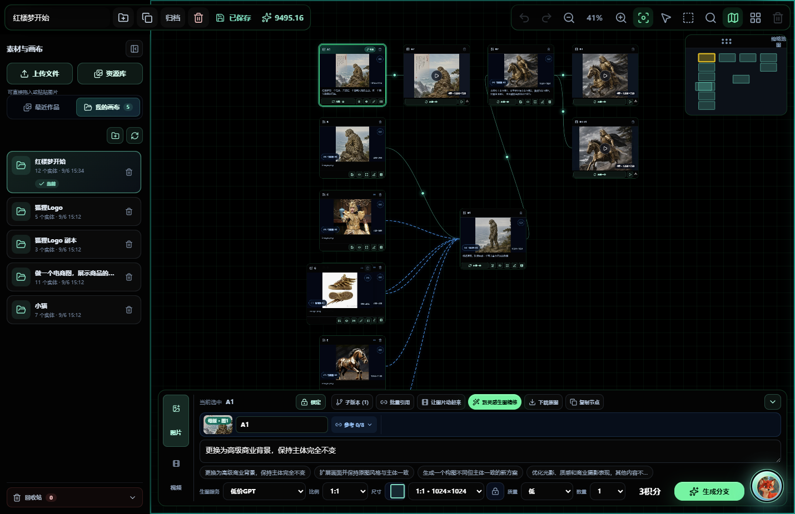

平移与缩放
在空白区域按住拖动可平移；滚轮缩放；顶部的放大、缩小与百分比显示当前倍率。“适应内容”会把现有实体重新纳入可视区域。
适合连续改图、角色或商品一致性、多参考融合、版本分支和图片转视频。画布既是创作空间，也是可追溯的项目记录。

在空白区域按住拖动可平移；滚轮缩放；顶部的放大、缩小与百分比显示当前倍率。“适应内容”会把现有实体重新纳入可视区域。
切换框选工具后拖出选择框，可一次选择多个实体，用于对比、整理或批量操作。双击空白处释放选择。
初次打开位于右上角。缩微框使用普通细线，当前视野和选中内容以更醒目的边框区分，帮助定位远处节点。
实体较多时使用自动排列整理结构；搜索用于定位画布内容。撤销/重做可恢复近期编辑动作。
图片、视频、想法和生成任务都是画布实体。图片实体是最常用的创作起点。

鼠标悬停在图片非删除按钮区域即可用手掌抓取移动。点击实体会选中它；点击空白处仍按画布原有方式平移。
锁定后不仅保护内容，也锁住画布坐标。尝试拖动时，实体会显示红色遮罩和带锁的黄色圆圈，提醒先解锁。
当前选中图片自动成为母版“图1”。通过引用按钮、连接手柄、资产库或批量选择添加辅助图，随后编号为图2、图3……。
引用线悬停后会出现删除入口，可以解除引用。生成线代表历史生成关系，不允许删除；线条中间的实心圆点可悬停查看当时的提示词和设置。

| 区域 | 功能 | 使用要点 |
|---|---|---|
| 提示词 | 描述新分支要发生的变化 | 引用多图时按图1、图2顺序说明各图作用 |
| 预设短句 | 快速加入常用修改方向 | 点击后仍应检查完整提示词是否矛盾 |
| 图片参数 | 服务、比例、尺寸、质量、数量 | 可把当前尺寸保存为模板；提交前确认积分 |
| 视频参数 | 视频服务、输出模式、时长、方向与音频能力 | 不同上游模型支持项不同，以当前界面可选项为准 |
| 任务节点 | 显示排队、生成、成功、失败 | 失败可原位重试；运行任务可在支持时取消 |
新建、重命名、复制、归档或恢复画布项目。顶部保存状态用于确认改动是否已写入，离开前应看到“已保存”。
点击实体预览可放大、缩小和重置；图片与视频均可从预览或实体操作区下载。
选择 2 张图片可用滑杆比较；3 张及以上使用网格比较。对比后点击“采用”，将满意版本标记为最终版本。
归档项目进入只读状态；回收站可恢复或永久删除。删除和清空前确认项目没有仍需保留的素材。
先点“适应内容”，再看右上角缩略地图。图片可能位于当前视野之外，并不一定丢失。
引用线表示某张图被本次生成作为参考，可解除；生成线表示结果从哪个父节点产生，是追溯链路，不能删除。
给关键实体重命名，锁定已确认版本，使用分支而不是覆盖，并把最终结果标记为“采用”。